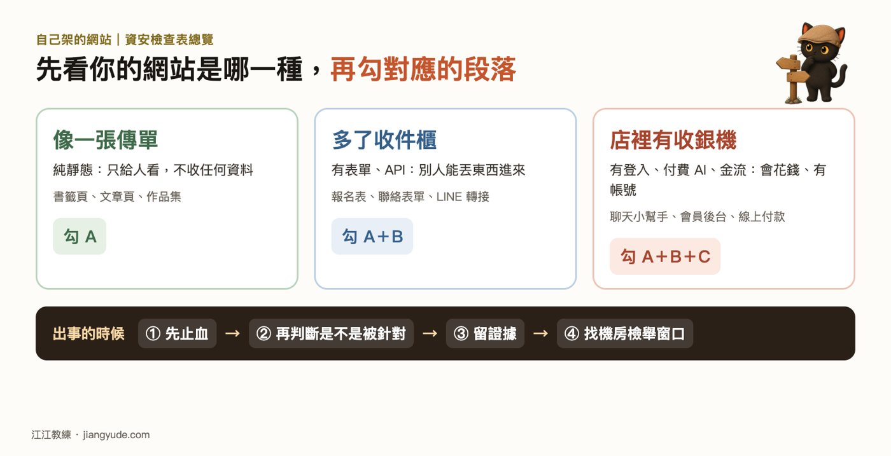
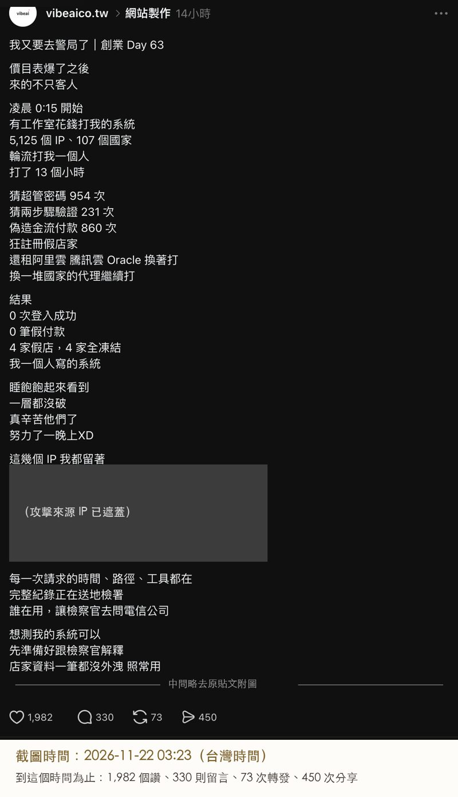
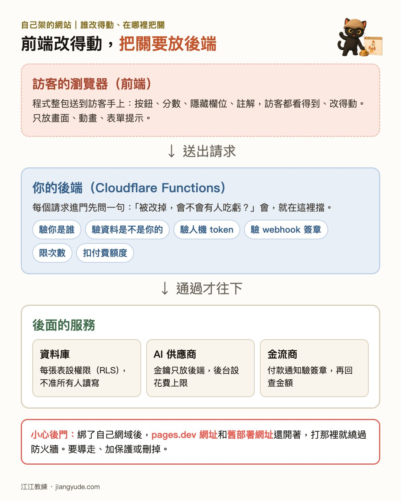
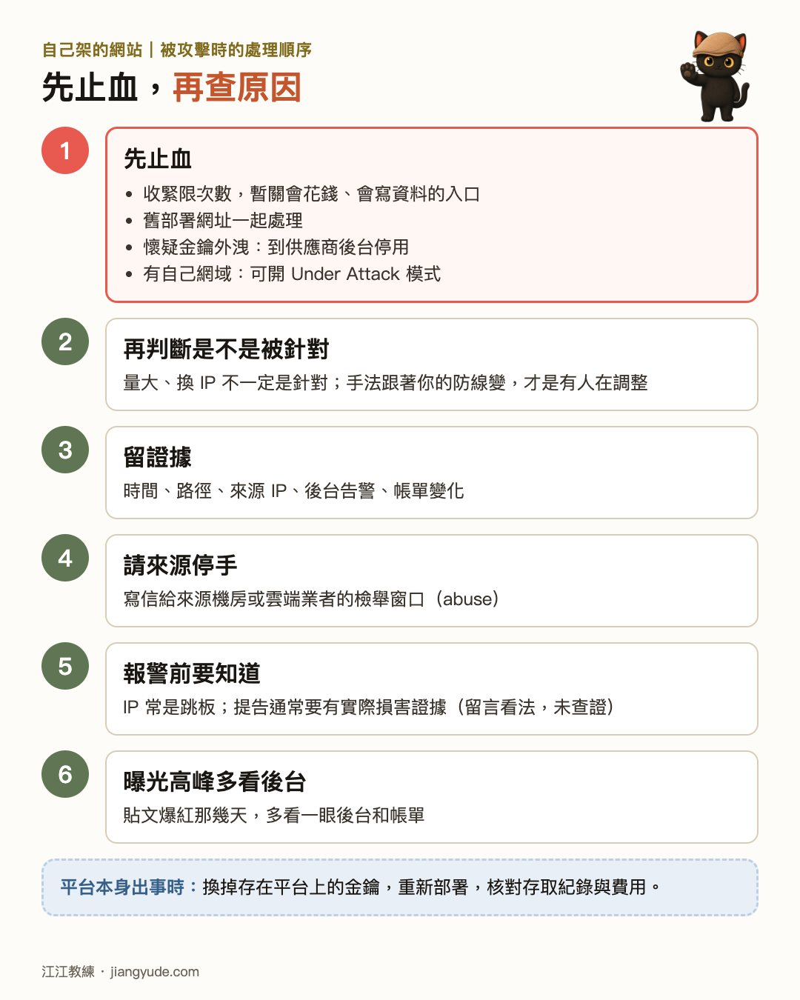
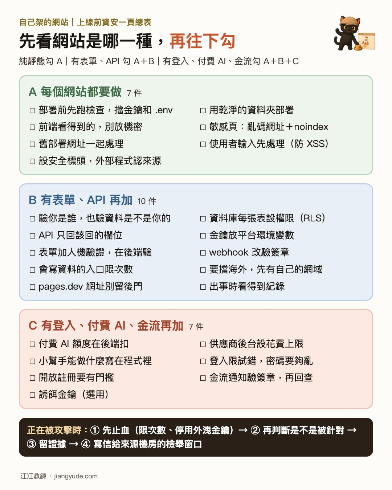

這篇在講什麼
用 AI 做網站越來越快，上線之後會不會被攻擊、被攻擊要怎麼辦，多數人沒想過。這篇從一位一人開發者被連續攻擊 13 小時的貼文開始，整理成一張照網站類型分段勾的資安檢查表。純展示的網站只要勾第一段；有表單、登入、付費 AI 或金流的站，再往下多勾幾段。表的後面有一段可以請 AI 照表檢查的提示詞，再來是正在被攻擊時，照什麼順序處理。
- 用 AI 做了網站，想知道上線前還要檢查什麼的人
- 網站有表單、會員或串了付費 AI，擔心被濫用或帳單暴衝的人
- 幫客戶架站、要交代資安做到哪裡的接案者與顧問
- 一張分三段的檢查表：先看你的站是哪一種，再勾對應的段落
- 一段可以直接貼給 AI 的提示詞，請它照這張表檢查你的網站
- 被攻擊時的六步處理順序，先止血再查原因

一、一個網站被打了 13 小時，留言區在討論什麼

2026 年 11 月，Threads 上一位一人開發者 @vibeaico.tw 發了一篇〈我又要去警局了｜創業 Day 63〉。他做的預約系統被連續攻擊 13 小時，最後沒被打進去。攻擊者被封鎖就換 IP 回來，開的假店被凍結就換信箱再開，還照他的金流格式偽造了 860 次付款通知。
我在 11 月 21 日整理留言時，這篇貼文有 8.2 萬次瀏覽，當時載入的留言有 62 則（不含作者自己的回覆）。整理下來，認真給建議的有 21 則，嘲諷的只有 6 則，其他是鼓勵、閒聊和提問。提問裡有一句很直接：「這要怎麼查啊」。
有實務經驗的留言者，看法很一致：
- 這種攻擊量在公開網站算常見，有人說 13 小時不到三千次其實算少
- 攻擊的 IP 多半是被入侵的電腦或代理，報警很難追到本人
- 與其等警察，先把自己的防護做好比較實際
作者在貼文和回覆裡提到的情況是：攻擊者被擋之後換方法再來，還照他的金流格式偽造付款。他也在回覆裡貼出 Cloudflare 後台畫面，那段期間總請求數是 166 萬次。
這篇不評誰對。我從這篇貼文開始，後來自己又查閱了很多資料，把留言裡能用的建議和查到的做法，排成一張自己架站時可以照著勾的表。表分三段，要勾哪幾段，先看你的網站是哪一種。
二、資安要做多少，先看你的網站是哪一種
資安要做多少，看的是網站「會不會收東西、會不會花錢」。用店面來想：
- 純靜態網站像一張傳單：只有寫好的頁面給人看，沒有收任何資料。書籤頁、文章頁、作品集都是。
- 有表單、API 的網站像門口多了一個收件櫃：別人可以丟東西進來，例如報名表、聯絡表單、LINE 轉接。有人會拿它大量灌垃圾。
- 有登入、付費 AI、金流的網站像店裡有收銀機：會花錢、有帳號，被濫用的代價是帳單和假交易。會呼叫付費 AI 的聊天小幫手也算這一種。
對照下表，找到自己的那一列，就知道要勾哪幾段：
| 你的網站 | 例子 | 要勾哪幾段 |
|---|---|---|
| 純靜態 | 書籤頁、文章頁、作品集、活動頁 | A |
| 有表單、API | 報名表、聯絡表單、LINE 轉接 | A＋B |
| 有登入、付費 AI、自己串金流 | 會叫 AI 生圖或聊天的站、要登入的後台 | A＋B＋C |
有串付費 AI、但沒有登入也沒有金流的站（例如只有聊天小幫手），C 段只要看「付費 AI」那一組。出事的時候，不管哪一種都看第七節。
分不出該放前端還是後端時，問這一句

檢查表裡會一直出現「前端」（訪客的瀏覽器）和「後端」（伺服器）。一件事要交給哪一邊處理，有一句話可以幫你判斷：「這個結果被改掉，會不會有人吃虧？」會，就放後端，例如點數、價格、權限、付費額度；只影響自己眼前畫面的，例如動畫、排序、表單填錯的提示，留在前端就好。因為前端的程式整包送到訪客的瀏覽器裡跑，訪客改得動。這句話出自人蔘 Try Catch 的影片〈vibe coding 的資料放哪裡？〉。
檢查表每一條後面的標記怎麼看
下面每一條後面都有標記：交給 AI 是把這條貼給幫你寫網站的 AI 就能改；自己去後台 是 AI 碰不到、要你登入平台自己設定；AI 寫、你確認 是 AI 可以做，但你要看過結果或到後台補一步。
這張表以 Cloudflare Pages 為例寫，觀念換到其他平台大多也適用，平台專屬的設定名稱要另外查。
- 我做的網頁，要放在哪裡別人才打得開？：這一段分的是資安要做多少，那篇分的是網站該放哪個平台，兩張決策樹可以一起看。
三、A 段：每個網站上線前都要做的七件事
這一段不分網站類型，純靜態的站也要勾。前五件管的是推上去的東西，後兩件管的是頁面怎麼寫。
推上去的東西：不該公開的別跟著上線
- ☐ 部署前先跑檢查 交給 AI：上傳前確認沒有把密碼、金鑰、資料庫檔一起推上去。可以請 AI 寫一支部署前的檢查，偵測到
.env、備份檔、資料庫檔或金鑰的樣子就停下來，我自己的網站就是這樣做。金鑰也常常藏在整個 Git 歷史和建置後的打包檔裡，這兩處要一起查；查到了，只刪檔案不夠，要到後台把那把金鑰作廢換新。查 Git 歷史、查打包檔、作廢換新這幾點，是開發者老金的上線檢查清單提醒的。 - ☐ 用乾淨的資料夾部署 交給 AI：只放要公開的檔案，不要把整個專案資料夾推上去再期待排除設定幫你擋。
- ☐ 前端藏起來不等於沒送出去 AI 寫、你確認：送進網頁的東西，訪客打開瀏覽器的開發者工具都看得到，連程式註解、用樣式藏起來的欄位也是。所以內部數字、客戶資料不要放進網頁檔案，也不要放進公開的 GitHub。GitHub Pages 免費版的倉庫必須公開，刪掉的檔案還留在版本紀錄裡。
- ☐ 敏感內容三件一起做 交給 AI：含人名、會議、定價的頁面，用亂碼網址、加 noindex、robots.txt 擋爬蟲。robots.txt 只適合整個站都不想被搜到時擋整站，不要把秘密網址一條一條列進去，那等於公開給人看。也要知道它的副作用：robots.txt 擋住爬蟲後，搜尋引擎讀不到頁面上的 noindex，別處有連結指過來時，網址還是可能出現在搜尋結果。這三件只是降低被搜到的機會，知道網址的人照樣打得開。
- ☐ 舊部署網址還在 自己去後台：Cloudflare Pages 每次部署都會留一個
<部署編號>.<專案>.pages.dev的網址。你把敏感內容拿掉了，舊網址上的舊版還在；有後端程式的，舊網址還會繼續跑舊程式。要清掉得刪舊部署，或替預覽網址加存取保護；用存取保護的話，先確認保護範圍真的涵蓋那些舊網址，最保險是刪掉。
頁面怎麼寫：輸入和外部程式都要管
- ☐ 使用者輸入不能直接塞進頁面 交給 AI：網址參數、表單內容會顯示在頁面上的地方，要先處理過再放（這叫防 XSS，跨網站腳本攻擊）。
- ☐ 設好安全標頭，外部程式只用認得的來源 AI 寫、你確認：頁面載入的外部 script，每一個都要知道是誰的、為什麼要放。安全標頭裡有一項叫 CSP，可以規定頁面只准跑哪些來源的 script。怎麼設可以看資安研究者 Troy Hunt 的實作教學。
- AI 幫你把網頁做好了，該放哪？：這一段只提到 noindex 擋不住知道網址的人，那篇把「不被搜到」和「別人進不去」的差別，以及六種權限做法和費用整理成表。
四、B 段：有表單、API 的網站，上線前再加這幾件
網站一旦可以收東西，要顧的多了三類：資料誰能讀、誰能改；怎麼擋掉大量灌進來的請求；網域、防火牆和紀錄有沒有設好。
資料權限：誰能讀、誰能改
- ☐ 先確認你是誰，再確認這筆資料是不是你的 交給 AI：網站有「誰的資料」之分（訂單、報名紀錄、會員資料）時，後端每次都要檢查這兩件事。少了第二步，別人改網址裡的編號就看得到別人的資料。最簡單的測法：建兩個帳號 A、B，再開一個未登入的無痕視窗，三邊互相試著讀對方的資料。這個測法來自 Indie Hackers Taiwan 的上線檢查；這類「權限控管失效」是資安組織 OWASP 2025 年版十大網站風險的第一名。
- ☐ 用 Supabase、Firebase 這類現成資料庫的，每張表都要設權限 AI 寫、你確認：上線前請 AI 列出每張表的權限設定，你自己看過一遍。Supabase 官方文件要你對每一張對外開放的表開啟 RLS（每一列資料誰能讀、誰能改），開了之後還要看規則條件有沒有寫太鬆，例如「所有人都能讀」；secret key 不能放在瀏覽器裡。Firebase 官方文件裡「允許所有人讀寫」的測試規則，明寫絕對不能用在正式環境。用 Lovable 這類工具做站的，AI 上線專家這篇教了五分鐘自查：用無痕視窗、不登入打開網站，看讀不讀得到別人的資料。
- ☐ API 只回該回的欄位 交給 AI：回傳資料用白名單，私密資料不放在網址參數裡。
- ☐ 金鑰放在平台的環境變數 自己去後台：不寫進程式檔案，更不要推上 GitHub。
擋大量灌入：人機驗證、簽章、限次數
- ☐ 公開表單加人機驗證，而且要在後端驗 AI 寫、你確認：Cloudflare 有免費的 Turnstile，前端放一個驗證元件。關鍵在後端：伺服器要拿使用者送來的 token（一次性的驗證碼）去問 Cloudflare 對不對，並核對是不是從你的網域送來的。只放前端元件、後端沒驗，等於沒驗，Cloudflare 官方文件也寫明要在伺服器端驗證才算完成。分工上，元件要到 Cloudflare 後台申請，程式交給 AI 寫。
- ☐ 沒有畫面的入口改驗簽章 交給 AI：像 LINE 轉接這種只有機器在打的網址（webhook），放不了人機驗證，改成驗對方送來的簽章，確認真的是 LINE 送的。
- ☐ 會寫資料、會發通知的入口要限次數 交給 AI：同一個來源短時間送太多次就擋，判斷放在後端。純粹讀公開資料的低風險入口不用每個都加。
網域、防火牆與紀錄：要進後台處理的三件
- ☐ 想擋海外或設限速，要有自己的網域 自己去後台：Cloudflare 的防火牆規則（WAF）設在加進 Cloudflare 的網域上。網站只用
xxx.pages.dev的話設不了，要在後端程式裡自己擋。 - ☐ 綁了自己網域之後，
pages.dev網址還開著 AI 寫、你確認：攻擊者直接打pages.dev，就繞過你在自己網域設的防火牆。Pages 內建的存取保護只保護預覽部署，鎖不到正式的pages.dev。做法有兩種：照 Cloudflare 官方教學用 Bulk Redirects（批次導向）把它導回自己網域，或請 AI 在程式裡拒絕不是從自己網域來的請求。設好之後打一次pages.dev底下的 API 路徑，確認也被導走或擋下。這條管的是正式的pages.dev，A 段講的舊部署網址要另外處理。 - ☐ 出事時看得到紀錄 自己去後台：誰、什麼時候、打哪個路徑。平台紀錄保存多久先查清楚，不夠就自己存。
五、C 段：有登入、付費 AI、自己串金流的網站，上線前再加這幾件
這一段分兩組。只串了付費 AI、沒有登入也沒有金流的站，看第一組就好。
有串付費 AI 的（聊天小幫手也算）
- ☐ 付費 AI 的額度在後端扣 交給 AI：前端按鈕擋住不算數，有人可以直接打你的 API。
- ☐ 到供應商後台設花費上限 自己去後台：OpenAI、Anthropic、雲端平台的後台大多能設上限或預算告警。程式寫錯或被繞過時，帳單靠這個擋。要注意兩件事：有些只會通知不會停；帳單統計有延遲，高流量時還是可能超過一點，所以不能取代後端限次。
- ☐ 聊天小幫手能做什麼，要在程式裡限制 AI 寫、你確認：小幫手能讀哪些資料、能不能改資料、能不能花錢，要寫在程式裡，不要只靠提示詞。原因是有人會用話術叫 AI 照他的意思做事，這叫提示詞注入，在 OWASP 大型語言模型應用十大風險排第一。長期研究這個問題的 Simon Willison 指出，只在系統提示詞裡拜託 AI 不要上當是擋不住的。
有登入、開放註冊、自己串金流的
- ☐ 登入要限制試錯次數，管理員密碼要夠亂 交給 AI：不用好記的固定密碼。
- ☐ 開放註冊要有門檻 交給 AI：新帳號先凍結，或要信箱驗證。信箱驗證擋不住拋棄式信箱，所以會花錢的功能，還要加人工核准、邀請碼或總額度上限其中一種。那位開發者遇到的是假店連開，他把 4 家假店全部凍結。
- ☐ 自己串金流，付款通知要驗兩次 交給 AI：先驗通知的簽章，擋掉偽造的；金流商有查詢功能的，再用訂單編號回查一次，狀態、金額、幣別都對得上才算付款成功。那位開發者遇到的 860 次偽造付款，就是衝著這一道來的。用平台代收、交付也由平台完成的，就不用自己做這段。
- ☐ 可以放一組誘餌（選用）自己去後台：到供應商後台開一把專用的金鑰，額度設到極小、開啟使用告警，放在只有後端看得到的位置。它本來不該被用到，所以一被用就代表那裡外洩了。誘餌不能放進公開的程式碼裡，也不能拿正式金鑰充當。留言裡有人建議，如果偷用金鑰的和攻擊系統的是同一個 IP，證據就更完整。
- API key 可以貼給 AI 嗎？：這一段只講要設花費上限，那篇把金鑰怎麼保管、外洩怎麼止血、OpenAI 和 Anthropic 的上限各在哪裡設，一步一步走過。
六、拿去用：請 AI 照這張表檢查你的網站
A、B、C 三段可以自己一條一條勾，也可以先請 AI 對一遍。把下面這段貼給幫你寫網站的 AI（Claude、ChatGPT、Gemini 都可以），要在看得到你網站程式碼的工具或對話裡貼，AI 才不會憑空猜。只把程式碼貼進網頁版對話的話，AI 看不到 Git 歷史和後台設定，它說沒問題，不代表那些地方也沒問題。它會先判斷你的網站是哪一種，再逐項檢查：
七、網站正在被攻擊時，照這個順序處理
前面幾節是上線前做的事，這一節是出事當下用的，不管你的網站是哪一種都適用。看到大量異常請求、偽造通知或帳單暴衝，先止血再分析，不用先確定是不是有人針對你。

- 先止血：收緊限次數，必要時暫時關掉會花錢、會寫資料的入口。另外有三個地方要一起看：
- 舊部署網址還會跑舊程式，要一起處理，不然以為止血了其實沒有。
- 懷疑金鑰外洩，最快的是直接到供應商後台停用那把金鑰。網站這邊擋不住別人直接拿你的金鑰去打 AI 供應商。
- 網站有綁自己網域、走 Cloudflare 的，被大量請求灌爆時可以開 Under Attack 模式，訪客進站前多一道檢查。Cloudflare 說明這是被攻擊時的最後手段，平常預設是關的。
- 再判斷是不是被針對：網站上線就會被自動掃描，量大、換 IP 都不一定是針對，掃描工具本來就會換 IP。要看的是手法有沒有跟著你的防線變，例如照你的金流格式偽造通知、帳號被凍結就換信箱重開。
- 留證據：時間、路徑、來源 IP、後台告警、帳單變化都存起來。
- 請來源停手：寫信給攻擊來源所在機房或雲端業者的檢舉窗口（abuse），留言裡多人說這比報警快。
- 報警前要知道的事：攻擊 IP 常是被入侵的跳板，機器主人也可能是受害者；要提告，通常要有實際損害的證據。這是留言裡的看法，我沒有查證，不構成法律建議，真的要走法律途徑請問律師或警方。
- 貼文爆紅那幾天多看一眼後台：那位開發者說他兩次大量攻擊都發生在貼文爆紅之後。這是他的觀察，還沒有定論，但曝光高峰多看一眼後台和帳單，成本很低。
出事的是你用的部署平台時，放在上面的金鑰也要換
上面六步處理的是你自己的網站被打。還有一種情況是你用的部署平台本身出事，金鑰放在平台的環境變數裡，也要跟著換。2026 年 8 月部署平台 Zeabur 公告，部分專案的環境變數遭未經授權讀取，官方建議更換所有存在那裡、仍然有效的憑證，重新部署，並核對存取紀錄與費用。你用的平台發出資安公告時，照這個順序做。
八、這張資安檢查表能幫你什麼、幫不了什麼
這張表能幫你在上線前把常見的漏洞先補起來，也讓你在出事時知道第一步做什麼。
- 它不是完整的資安檢測。網站越複雜，越需要找專業的人做測試。
- Cloudflare 的設定名稱和位置會改，動手前再看一次官方文件和後台。
- 留言裡的法律看法我沒有查證，不構成法律建議。
- 純靜態的小網站風險本來就低，不需要為了這張表把每一段都做滿。先看你的站是哪一種，勾對應的段落就好。
附錄：資安檢查表純清單版（可以直接貼進驗收文件）
幫客戶架站、要交代做了哪些檢查的，可以用這一版，拿掉了故事和平台操作細節，順序和前面 A、B、C 三段一樣。

給你的 AI 讀的技術備忘（人可以跳過）
- 存取控制：每個請求先驗身分再驗物件歸屬，不信任網址或 body 裡的編號（OWASP Top 10 2025 A01 Broken Access Control）。
- Turnstile：伺服器端呼叫 siteverify 驗 token，核對
success與hostname（有設action也核對）；siteverify 失敗或逾時一律拒絕。token 有效期 300 秒，官方設計為單次使用，但重複偵測有延遲，接近同時的重送仍可能通過，不要把它當唯一的防重放手段。 - WAF 自訂規則與限速是 zone 層設定，套在走 Cloudflare 代理的自己網域；只用
*.pages.dev的專案要在 Functions 裡擋。 - Pages 綁自訂網域後，正式
<專案>.pages.dev預設仍可存取。可用 Bulk Redirects 導向自訂網域（確認子路徑也一併導向，打 API 路徑驗證），或在 Functions 依Host拒絕。Pages 預覽部署的 Access 只保護預覽，不含正式pages.dev與自訂網域。 - 舊部署
<部署 id>.<專案>.pages.dev會保留舊版並執行舊 Functions，刪除或加保護前先列出部署清單逐一驗證。 - 金流：驗簽章擋偽造；有查詢端點時回查並核對狀態、金額、幣別、訂單編號；同一筆通知只入帳一次。
- 花費上限設在供應商後台，帳務有延遲，不能取代後端原子額度與限次。
- Supabase：exposed schema 的每張表開 RLS，secret（service_role）key 不進瀏覽器；Firebase：正式環境不得用 allow read, write: if true。
- LLM 功能：權限與可呼叫的工具在程式層限制，不依賴系統提示詞防提示詞注入（OWASP LLM01:2025）。
- Cloudflare Under Attack mode：L7 DDoS 的最後手段，預設關閉，開啟會影響正常訪客與分析數據。
- 誘餌憑證：供應商端開專用 key、極小額度、開用量告警，只放在私密後端位置，不進公開 repo、靜態產物或前端。
來源
- Threads @vibeaico.tw〈我又要去警局了｜創業 Day 63〉與留言（2026-11-21 讀取）
- YouTube：人蔘 Try Catch 的影片〈vibe coding 的資料放哪裡？〉（2026-11-21）
- OWASP：OWASP Top 10
- Indie Hackers Taiwan：Vibe coding 產品快上線了？先用兩個帳號測權限（2026-11-14）
- AI 上線專家：Lovable 做的網站，資料庫可能對路人敞開：上線前請先做的五分鐘檢查（2026-11-11）
- 老金：Vibe Coding 做出来的 App 上线检查清单（2026-10-11）
- Zeabur：Zeabur 2026 年八月資安事件（2026-09-07）
- Supabase：Row Level Security
- Firebase：Get started with Cloud Firestore Security Rules
- OWASP：Top 10 for LLM Applications 2025
- Simon Willison：Prompt injection explained
- Troy Hunt：Locking Down Your Website Scripts with CSP
- OpenAI：Production best practices
- Cloudflare：Under Attack mode
- Cloudflare：Turnstile server-side validation
- Cloudflare：WAF custom rules
- Cloudflare：Pages custom domains
- Cloudflare：Redirect *.pages.dev to a custom domain
- Cloudflare：Pages preview deployments
這篇提到過的
再往前後延伸
- Cloudflare 免費方案夠用嗎？：網站被大量請求時，免費額度先撞到哪條線
- Cloudflare 免費版到底能做什麼？：Turnstile、WAF、Access 這些服務各在哪一類